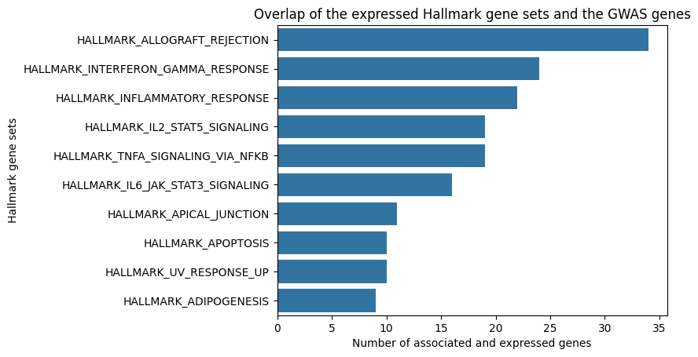
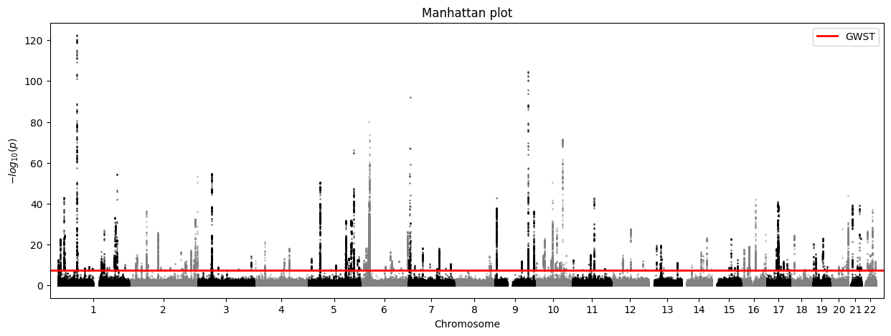
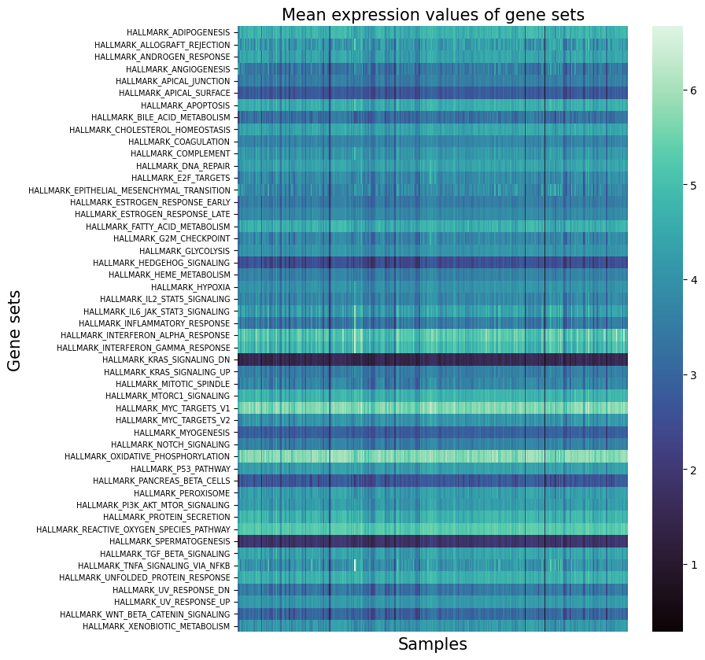

Multiomics
The goal of this project was to get familiar with genomics and start working with real data from patients. First, I chose Inflammatory Bowel Disease (IBD) as the disease to study. Then, I used an IBD Genome-wide Association Study (GWAS) to find genes whose variants are associated with a positive diagnosis in patients. After finding the candidate genes, I cross-referenced the functional behavior of these genes in the patients using the expression levels of the gene sets which the candidate genes belong to. I found that the gene sets with the most associated and expressed genes are known to be related to symptoms of IBD such as inflammation and abnormal immune response.



1/3